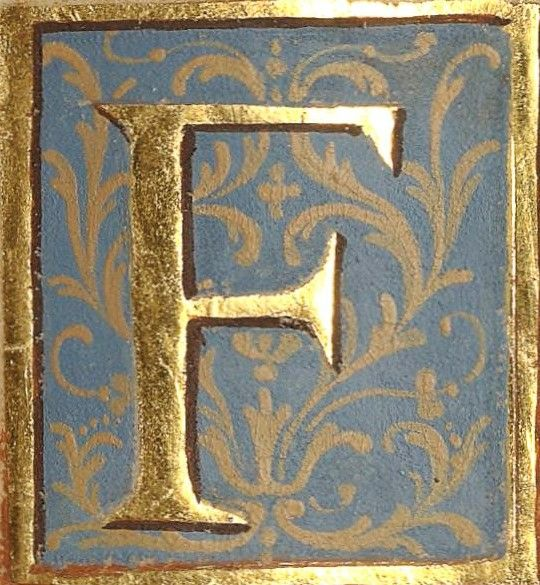

rei joão das regras
Servi a casa real como confessor e conselheiro. E ouvi pecados que fariam corar o demónio.
O rei Afonso veio ter comigo depois do crime, a pedir absolvição. Dei-lha, porque sou servo de Deus, mas o peso não saiu dos seus ombros.
Mais tarde, Pedro mandou-me rezar missas por Inês. Disse que ela fora sua esposa perante Deus, embora sem testemunhas.
Não sei se o Céu reconhece casamentos feitos às escondidas, mas se reconhece o amor, então Inês entrou de véu branco.